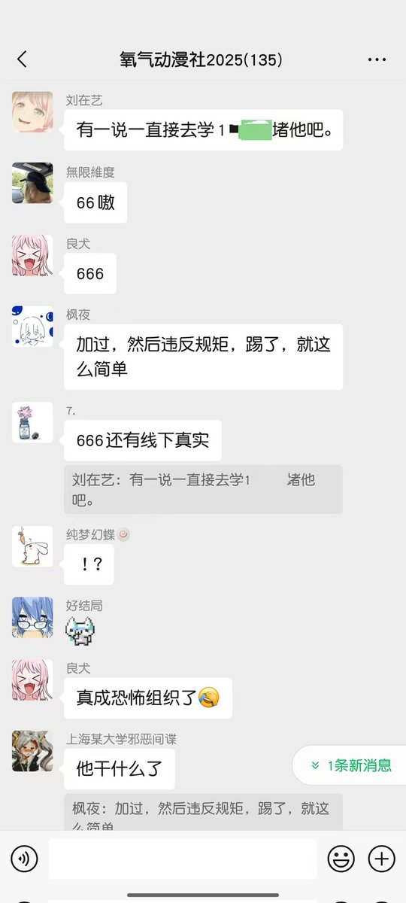
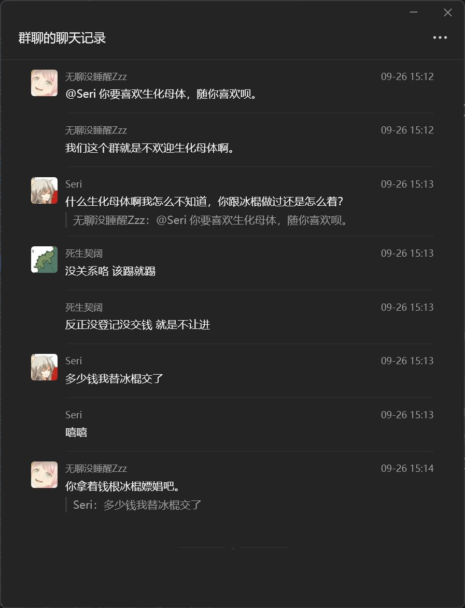
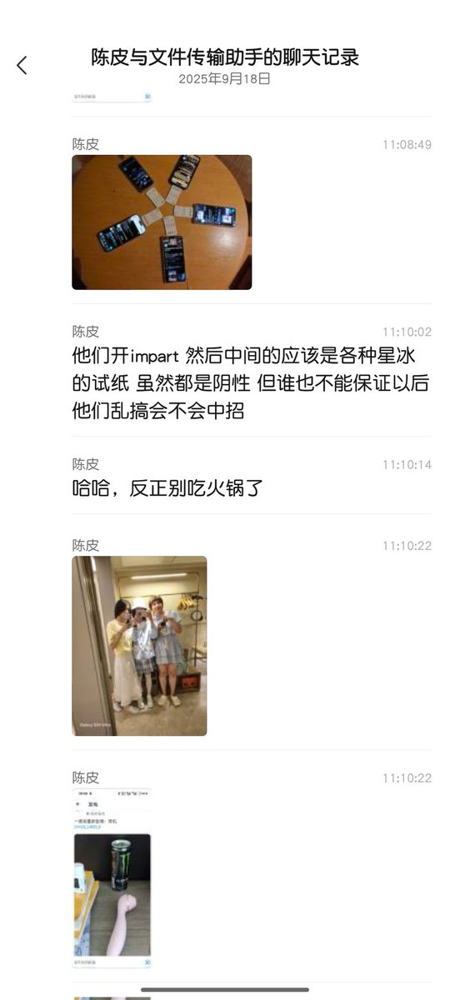
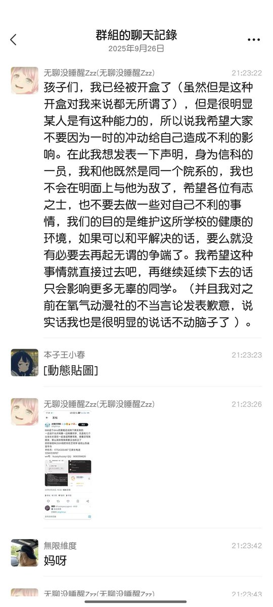
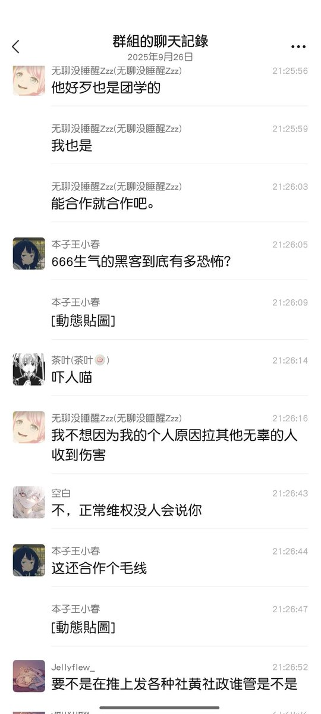

冰棍好烫喵 🍥🧊🍔🍟🍜🍣🍙🍧🍮🍩☕️💊🤤
@bghtnya
顺便留档说明下就是开盒和挂人并不是我先干的 我也很不喜欢干挂人的事（）只是几个星期前就被他们挂过网暴过（？当时导员找我 我还不知道）
这次又来忍不了了 甚至说要线下真实我 那就别怪以其人之道还治其人之身
和解就好
peace and love





冰棍好烫喵 🍥🧊🍔🍟🍜🍣🍙🍧🍮🍩☕️💊🤤
@bghtnya
目前算是和当事人和解了 那么双方都各退一步 我也删除所有挂人和网暴的帖子 并对该同学表示歉意） https://t.co/1BPUQgPJLt